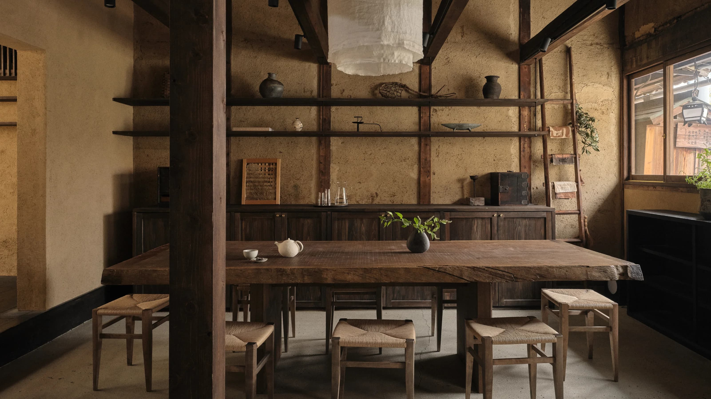
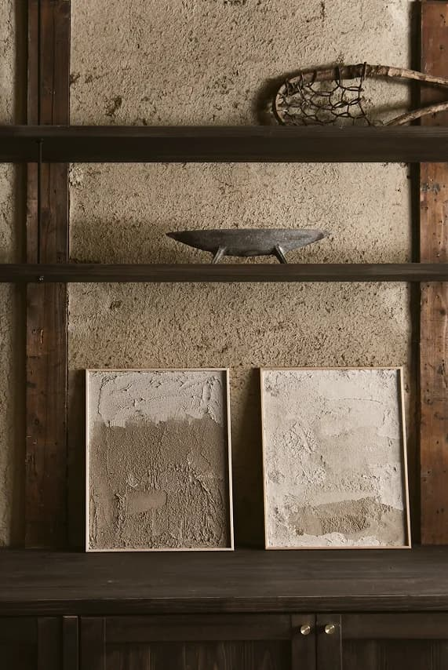
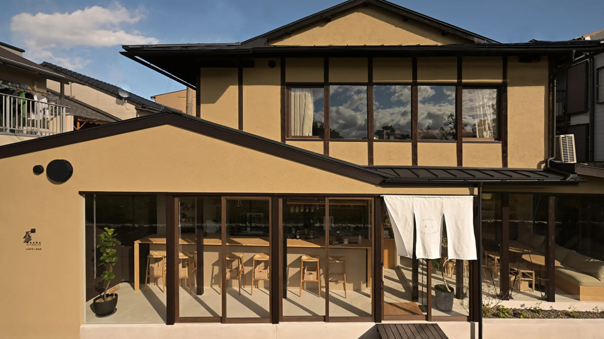

A World Inspired
Our projects are born from a dream to explore what it truly means to live well, blending Japan's timeless wisdom into modern life.
The word ‘maana’ means ‘senses,’ inviting you on a journey that awakens your senses. Immerse yourself in Kyoto’s simple yet profound way of living, where luxury is found in the simplicity and quiet of everyday moments.


Maana Experiences
Explore Japan’s ancestral practices to enrich our modern everyday lives.
With wisdom passed down through generations, we collaborate with experts to teach us the old ways in a new perspective, offering intimate experiences that inspire intentional living.

Choose an experience

Maana Atelier
Tea Dye

Maana Atelier
Botanical Teas

Maana Atelier
Earthen Wall

Maana Atelier
Fermentation

Private Tea House
Morning Tea Ceremony

Private Tea House
Night Tea Ceremony
Retreats
Explore Japan’s ancestral practices to enrich our modern everyday lives.
With wisdom passed down through generations, we collaborate with experts to teach us the old ways in a new perspective, offering intimate experiences that inspire intentional living.
Featured In



Seasonal newsletter
For insight into Kyoto’s road less traveled.
Every quarter, you’ll receive a newsletter filled with inspirational, educational, and informative updates.